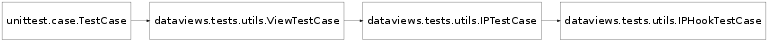

Bases: dataviews.tests.utils.IPTestCase
This class
Bases: dataviews.tests.utils.ViewTestCase
This class extends ViewTestCase to handle IPython specific objects.
Bases: unittest.case.TestCase
The class implements comparisons between View objects for the purposes of testing. The most important attribute that needs to be compared is the data attribute as this contains the raw data held by the View object.